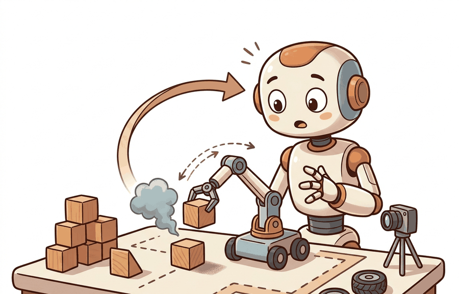

"Simulation gives you replay. Hardware tells you which assumptions survived contact."
Section 1.4

A simulator and a robot run the same policy, but they are not the same instrument. Simulation is a world with declared equations: it gives wall-clock speed, massive parallelism, perfect resets, ground-truth state, safety, and failures that cost nothing. Hardware is a world with undeclared physics: contact, friction, compliance, sensor noise, latency, actuation limits, calibration drift, and wear. The distance between a policy's behavior in those two worlds is the reality gap, and it is a measurable quantity, not a disclaimer. Almost every deployment decision in this book reduces to one question: which conclusions does the cheap world support, and how large is the gap to the expensive one.
Two worlds, one policy
Treat the simulator and the robot as two transition processes that share an action space. The simulator advances state by a declared model $T_{\text{sim}}(s' \mid s, a)$: equations the modeler wrote down for rigid-body dynamics, a contact solver, a friction law, and a sensor model. The physical robot advances by $T_{\text{real}}(s' \mid s, a)$, which no one ever wrote down in full. The same policy $\pi$ induces a trajectory distribution in each, and therefore two values of the task functional $J(\pi)$ from Section 1.1. The reality gap is their difference,
$$\Delta(\pi) = J_{\text{sim}}(\pi) - J_{\text{real}}(\pi).$$
This is the central object of the section. It is positive when a policy looks better in simulation than on hardware, which is the usual case, and it is measured in the units of $J$ (success rate, return, completion time), not asserted as a caveat. A sim-to-real method is good exactly to the extent that it makes $\Delta(\pi)$ small for the policies you actually deploy, and the honest way to report transfer is to give $J_{\text{sim}}$, $J_{\text{real}}$, and $\Delta$ together, computed on the same policy and the same task definition.
What simulation buys, and at what fidelity
Simulation is attractive for reasons that are concrete and quantifiable. It runs faster than wall-clock time, often by orders of magnitude, and it runs thousands of environments in parallel on a GPU, so a learning run that would take physical years finishes in hours. It offers perfect resets: every episode can start from an identical state, which makes counterfactual experiments (change one variable, hold the rest) possible in a way hardware never allows. It exposes ground-truth state (exact poses, contact forces, object masses) that on a robot must be estimated and is partly unobservable. And its failures are free: a simulated robot can fall ten thousand times with no broken gearbox and no safety incident.
What it does not give for free is agreement with the physical world. The divergence has named sources, and they map onto three fidelity dimensions worth keeping separate:
- Physical fidelity covers dynamics: contact and friction are stiff, discontinuous, and the hardest thing for any solver to get right; restitution, compliance, joint backlash, motor torque saturation, and actuation latency are routinely simplified or omitted.
- Visual fidelity covers the appearance gap that a vision policy sees: lighting, materials, textures, reflections, and the difference between a rendered image and a camera frame with real noise, motion blur, and rolling shutter.
- Behavioral fidelity covers whether the agent makes the same decisions and the same mistakes in both worlds. This is the only dimension that ultimately matters, and the one that physical and visual fidelity are merely means toward. A scene can look photorealistic and still produce the wrong failure.
These trade against speed. A high-fidelity contact solver with fine time steps and a path-traced renderer is slower per step, which shrinks the parallelism that made simulation attractive in the first place. The speed-fidelity tradeoff is the practitioner's core dial: you buy fidelity with compute, and past some point the marginal fidelity does not change which policy you would deploy, so paying for it is waste.
There is no globally "high-fidelity" simulator. Fidelity is defined against a task and a claim. A friction model good enough to learn a walking gait may be useless for a precision insertion that lives or dies on micron-scale contact. Always state fidelity as "sufficient for claim X," and let the claim, not the screenshot, decide how much physics and rendering you actually need.
Closing the gap: identification and randomization
Two strategies dominate, and they pull in opposite directions. System identification narrows the simulator onto the specific robot: measure masses, friction coefficients, motor constants, and latencies, then fit $T_{\text{sim}}$ to match logged hardware rollouts. It shrinks $\Delta$ by making the model true. Its limit is that you can only identify what you thought to measure, and the residual unmodeled physics is exactly what bites on deployment. Domain randomization takes the opposite bet: rather than match one robot, sample the uncertain parameters (friction, mass, latency, lighting, textures) over a wide range during training, so the policy must be robust to all of them and treats the real world as just one more sample from the training distribution. It trades peak in-distribution performance for transfer that does not require an accurate model. In practice they combine: identify what you can measure, randomize over what you cannot. Chapter 13 develops simulation and the physics engines; Chapters 20 and 43 develop domain randomization and sim-to-real transfer in depth.
A reality gap you can run
The code below is the smallest honest demonstration of $\Delta$. A 1D braking controller must stop a sliding mass before a wall. It plans its braking distance from an assumed friction coefficient (the value it was tuned on, $\mu = 0.8$) and brakes accordingly. We then evaluate the identical controller, with no retuning, on hardware-like surfaces where the true friction is lower. The controller is correct in its own world and crashes in the other, and we read off the reality gap as the drop in success rate.
# Reality gap for a 1D braking controller tuned to one friction coefficient.
# Same policy, two worlds: it succeeds where mu matches and overshoots where mu drops.
import numpy as np
def overshoot(mu_true, mu_assumed, v0=4.0, dt=0.005, g=9.81, margin=0.30):
# The controller knows the wall position and plans its braking distance from
# its ASSUMED friction. It must stop on or before the wall (overshoot <= 0).
planned_stop = v0**2 / (2.0 * mu_assumed * g)
wall = planned_stop + margin
brake_point = wall - planned_stop - v0 * dt # one-step lead removes integration bias
x, v = 0.0, v0
while v > 1e-4:
decel = mu_true * g if x >= brake_point else 0.0
v = max(0.0, v - decel * dt)
x += v * dt
return x - wall # > 0 means it crossed the wall (a crash)
mu_nominal = 0.8 # the value the controller was tuned on
print(f"{'true mu':>8} {'overshoot (m)':>14} {'outcome':>8}")
for mu_true in (0.8, 0.6, 0.4, 0.3):
ov = overshoot(mu_true, mu_assumed=mu_nominal)
print(f"{mu_true:>8.2f} {ov:>14.3f} {'ok' if ov <= 0 else 'CRASH':>8}")
# Reality gap as a scalar: success at the tuned value vs. over a realistic friction band.
succeeds = lambda mu: overshoot(mu, mu_nominal) <= 0
J_sim = float(np.mean([succeeds(0.8) for _ in range(50)])) # eval where it was tuned
J_real = float(np.mean([succeeds(mu) for mu in np.linspace(0.3, 0.8, 50)])) # eval over the real band
print(f"\nJ_sim (mu fixed at 0.80) = {J_sim:.2f}")
print(f"J_real (mu in [0.30,0.80]) = {J_real:.2f}")
print(f"reality gap Delta = {J_sim - J_real:.2f}")MuJoCo (open-source, maintained by Google DeepMind) is the reference for accurate contact dynamics with explicit bodies, joints, actuators, and sensor traces; reach for it when the suspected gap is contact, friction, or controller stability. MuJoCo MJX is its GPU and TPU backend, and the newer MuJoCo Warp (a 2025 DeepMind and NVIDIA collaboration) pushes per-step throughput on RTX-class GPUs by one to two orders of magnitude, making large-scale domain randomization tractable on a single workstation. NVIDIA Isaac Lab runs thousands of parallel environments (tens of thousands of frames per second) for manipulation and locomotion policy learning, and as of 2025 it is moving toward multiple physics backends through Newton, including MuJoCo Warp. Use MJX or MuJoCo Playground when contact accuracy is the constraint; use Isaac Lab when robustness must be measured across many appearances, placements, and physical parameters at once (Chapter 13).
Which fidelity dimension transfers what
The table separates the three fidelity dimensions and states, for each, what a simulator typically gets right, where the gap usually opens, and which gap-closing strategy applies. It is a planning aid: locate the claim you want to make in the left column and read across.
| Fidelity dimension | What simulation gets right | Where the gap opens | Primary gap-closing strategy |
|---|---|---|---|
| Physical (dynamics) | Free-flight motion, gross kinematics, rigid-body inertia, energy bookkeeping | Contact, friction, compliance, backlash, actuator latency and torque limits | System identification of measured parameters; randomize the rest |
| Visual (appearance) | Geometry, occlusion, camera intrinsics and viewpoint | Lighting, materials, reflections, sensor noise, motion blur, the render-vs-photo gap | Domain randomization of textures and lighting; real2sim scene capture |
| Behavioral (decisions) | Logic, planning, high-level task sequencing, discrete mode switches | Same-action, different-outcome divergence under unmodeled physics or perception | Closed-loop hardware panels that target the failure labels, not demos |
| Temporal (timing) | Nominal control rate and episode horizon | Sensor and actuation latency, jitter, dropped frames, clock skew | Inject measured delay distributions into the simulator |
The most expensive mistake in this area is reporting a simulated success rate as if it were a statement about the robot. A policy can reach high $J_{\text{sim}}$ by exploiting simulator artifacts: a too-soft contact model that forgives bad grasps, an idealized sensor with no noise, a solver that lets a gripper interpenetrate an object and "hold" it by a bug. The policy has then overfit the simulator, not learned the task, and $\Delta$ is large and hidden. Never publish or ship a simulated number without at least one closed-loop hardware rollout on the same policy, and report $\Delta$ explicitly. A sim result with no paired real result is a hypothesis, not a capability.
Three lines are reshaping what a simulator is. Real2sim2real closes the loop automatically: capture real rollouts, infer which simulator parameters or assets are wrong, correct the model, retrain, and redeploy, so the gap is diagnosed causally rather than guessed. 3D Gaussian Splatting and related neural reconstruction build photorealistic, physics-ready scenes directly from a handful of real camera passes, collapsing the visual half of the reality gap by making the simulator's appearance a reconstruction of the actual deployment environment. And generative world models learn the transition function from interaction data and act as simulators in their own right, sidestepping hand-written physics for domains where good equations are unknown; their open problem is the same $\Delta$, now between a learned world and the real one, plus the question of whether they hallucinate dynamics that never occur.
Simulation and hardware run the same policy in different worlds, and the difference between them, $\Delta(\pi) = J_{\text{sim}}(\pi) - J_{\text{real}}(\pi)$, is a number you measure, not a hedge you write. Earn the speed and safety of simulation honestly by stating which fidelity dimension a claim depends on, closing the gap with system identification and domain randomization, and pairing every simulated metric with a hardware rollout on the same policy.
Turn Code 1.4.1 into a domain-randomization study. Instead of one assumed friction, give the controller a braking point computed for the worst-case friction in a training band $[\mu_{\min}, 0.8]$. Sweep $\mu_{\min}$ from 0.8 down to 0.3, recompute $J_{\text{real}}$ over $[0.3, 0.8]$, and plot the reality gap $\Delta$ against $\mu_{\min}$. At what training band does $\Delta$ collapse, and what does the policy give up in best-case stopping distance to get there?
Pick a robot task you know and write its reality-gap budget on one page: list the three fidelity dimensions, name the single most likely gap source in each, classify each as "identify" (you can measure it) or "randomize" (you cannot), and state the one hardware failure label that would tell you the simulator was lying. Which dimension carries the most risk for your task, and is your current simulator spending its compute there?
What's Next?
Section 1.5 explains why the 2023 to 2026 Physical AI framing changed the field's center of gravity.
Section References
Tobin, J., Fong, R., Ray, A., Schneider, J., Zaremba, W., and Abbeel, P. "Domain Randomization for Transferring Deep Neural Networks from Simulation to the Real World." IROS (2017). https://arxiv.org/abs/1703.06907
The domain-randomization paper. Trains on a wide distribution of simulated appearances so the real world reads as one more sample, the strategy used to collapse $\Delta$ in Exercise 1.4.1.
Todorov, E., Erez, T., and Tassa, Y. "MuJoCo: A Physics Engine for Model-Based Control." IROS (2012). https://ieeexplore.ieee.org/document/6386109
The original MuJoCo paper, defining the contact and constraint solver that underlies the physical-fidelity dimension and the MJX and Warp backends discussed in the library shortcut.
Mittal, M. et al. "Orbit / Isaac Lab: A Unified Simulation Framework for Interactive Robot Learning Environments." IEEE RA-L (2023). https://arxiv.org/abs/2301.04195
The framework behind NVIDIA Isaac Lab and its GPU-parallel environments for large-scale manipulation and locomotion learning and randomization.
Zhao, W., Queralta, J. P., and Westerlund, T. "Sim-to-Real Transfer in Deep Reinforcement Learning for Robotics: A Survey." IEEE SSCI (2020). https://arxiv.org/abs/2009.13303
A survey of the reality-gap problem and the system-identification, domain-randomization, and real2sim strategies that close it.